В данном уроке мы рассмотрим понятие модуля числа более подробно.
Предварительные навыки Содержание урока- Что такое модуль?
- Раскрытие модуля
- Преобразование выражений с модулями
- Задания для самостоятельного решения
Что такое модуль?
Модуль — это расстояние от начала координат до какого-нибудь числа на координатной прямой. Поскольку расстояние не бывает отрицательным, то и модуль всегда неотрицателен. Так, модуль числа 3 равен 3, как и модуль числа −3 равен 3
| 3 |= 3
|−3|= 3
Предстáвим, что на координатной прямой расстояние между целыми числами равно одному шагу. Теперь если отметить числа −3 и 3, то расстояние до них от начала координат будет одинаково равно трём шагам:
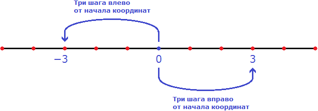
Модуль это не только расстояние от начала координат до какого-нибудь числа. Модуль это также расстояние между любыми двумя числами на координатной прямой. Такое расстояние выражается в виде разности между этими числами, заключенной под знак модуля:
|x1 − x2|
Где x1 и x2 — числа на координатной прямой.
Например, отметим на координатной прямой числа 2 и 5.
Расстояние между числами 2 и 5 можно записать с помощью модуля. Для этого запишем разность из чисел 2 и 5 и заключим эту разность под знак модуля:
|2 − 5| = |−3| = 3
Видим, что расстояние от числа 2 до числа 5 равно трём шагам:
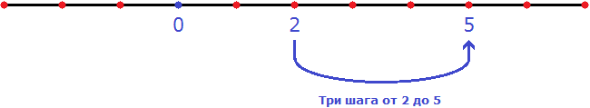
Если расстояние от 2 до 5 равно 3, то и расстояние от 5 до 2 тоже равно 3
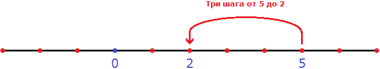
То есть, если в выражении |5 − 2| поменять числа местами, то результат не изменится:
|5 − 2| = | 3 | = 3
Тогда можно записать, что |2 − 5| = |5 − 2|. Вообще, справедливо следующее равенство:
|x1 − x2| = |x2 − x1|
Это равенство можно прочитать так: Расстояние от x1 до x2 равно расстоянию от x2 до x1.
Раскрытие модуля
Когда мы говорим, что |3|= 3 или |−3|= 3 мы выполняем действие называемое раскрытием модуля.
Правило раскрытия модуля выглядит так:
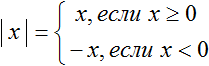
Такую запись мы ранее не использовали. Дело в том, что равенство можно задавать несколькими формулами. Фигурная скобка указывает, что возможны два случая в зависимости от условия. В данном случае условиями являются записи «если x ≥ 0» и «если x < 0».
В зависимости от того что будет подставлено вместо x, выражение |x| будет равно x, если подставленное число больше или равно нулю. А если вместо x подставлено число меньшее нуля, то выражение |x| будет равно −x.
Второй случай на первый взгляд может показаться противоречивым, поскольку запись |x| = −x выглядит будто модуль стал равен отрицательному числу. Следует иметь ввиду, что когда x < 0, то под знáком модуля располагается отрицательное число. После знака равенства нужно подстáвить данное отрицательное число вместо x и раскрыть скобки.
Например, найдём модуль числа −7, используя правило раскрытия модуля:
Итак, x = −7
|−7|
В данном случае выполняется второе условие x < 0, ведь −7 < 0
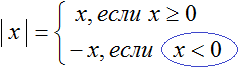
Поэтому используем вторую формулу. А именно |x| = −x. Подстáвим вместо x число −7
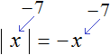
Отсюда:
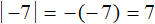
Поэтому |−7| = 7.
Пример 2. Пусть x = 5. То есть мы рассматриваем модуль числа 5
| 5 |
В данном случае выполняется первое условие x ≥ 0, ведь 5 ≥ 0
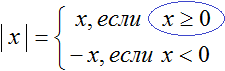
Поэтому используем первую формулу. А именно | x | = x. Получаем | 5 | = 5.
Ноль это своего рода точка перехода, в которой модуль меняет свой порядок раскрытия и далее сохраняет свой знак. Визуально это можно представить так:
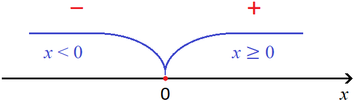
На рисунке красные знаки минуса и плюса указывают как будет раскрываться модуль |x| на промежутках x < 0 и x ≥ 0.
К примеру, если взять числа 1, 9 и 13, а они принадлежат промежутку x ≥ 0, то согласно рисунку модуль |x| раскроется со знаком плюс:
| 1 | = 1
| 9 | = 9
| 13 | = 13
А если возьмём числа, меньшие нуля, например −3, −9, −15, то согласно рисунку модуль раскроется со знаком минус:
|−3| = −(−3) = 3
|−9| = −(−9) = 9
|−15| = −(−15) = 15
Пример 3. Пусть x = √4 − 6. То есть мы рассматриваем модуль выражения √4 − 6,
|√4 − 6|
Корень из числа 4 равен 2. Тогда модуль примет вид
|√4 − 6| = |2 − 6| = |−4|
x который был равен √4−6 теперь стал равен −4. В данном случае выполняется второе условие x < 0, ведь −4 < 0
Следовательно, используем вторую формулу |x| = −x. Продолжаем решение в исходном примере:
|√4 − 6| = |2 − 6| = |−4| = −(−4) = 4
На практике обычно рассуждают так:
«Модуль раскрывается со знаком плюс, если подмодульное выражение больше или равно нулю; модуль раскрывается со знаком минус, если подмодульное выражение меньше нуля».
Примеры:
|2| = 2 — модуль раскрылся со знаком плюс, поскольку 2 ≥ 0
|−4| = −(−4) = 4 — модуль раскрылся со знаком минус, поскольку −4 < 0
В некоторых учебниках можно встретить следующую запись правила раскрытия модуля:
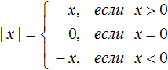
В этой записи первое условие которое ранее выглядело как x ≥ 0 расписано подробнее, а именно сказано что если x > 0, то выражение |x| будет равно x, а если x=0, то выражение |x| будет равно нулю.
Пример 4. Пусть x = 0. То есть мы рассматриваем модуль нуля:
| 0 |
В данном случае выполняется условие x=0, ведь 0 = 0
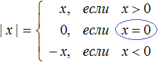
Отсюда: |0| = 0
Пример 5. Раскрыть модуль в выражении |x|+ 3
Если x ≥ 0, то модуль раскроется со знаком плюс, и тогда исходное выражение примет вид x + 3.
Если x < 0, то модуль раскроется со знаком минус, и тогда исходное выражение примет вид −x + 3. Чтобы сделать это выражение более удобным для восприятия, поменяем местами его члены, полýчим 3 − x
Теперь запишем решение так:
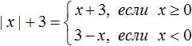
Проверим это решение при произвольных значениях x.
Допустим, требуется найти значение выражения |x|+ 3 при x = 5. Поскольку 5 ≥ 0, то модуль, содержащийся в выражении |x|+ 3 раскрóется со знаком плюс и тогда решение примет вид:
|x|+ 3 = x + 3 = 5 + 3 = 8
Найдём значение выражения |x|+ 3 при x = −6. Поскольку −6 < 0, то модуль содержащийся в выражении |x|+ 3 раскроется со знаком минус и тогда решение примет вид:
|x| + 3 = 3 − x = 3 − (−6) = 9
Пример 6. Раскрыть модуль в выражении x +|x + 3|
Если x + 3 ≥ 0, то модуль |x + 3| раскроется со знаком плюс и тогда исходное выражение примет вид x + x + 3, откуда 2x + 3.
Если x + 3 < 0, то модуль |x + 3| раскроется со знаком минус и тогда исходное выражение примет вид x − (x + 3), откуда x − x − 3 = −3.
Запишем решение так:
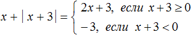
Заметим, что условия x + 3 ≥ 0 и x + 3 < 0 являются неравенствами. Их можно привести к более простому виду, решив их:
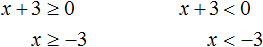
Тогда условия из решения можно заменить на равносильные x ≥ −3 и x < −3
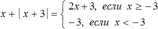
Во втором случае когда x строго меньше −3 выражение x +|x + 3| всегда будет равно постоянному числу −3.
Например, найдём значение выражения x +|x + 3| при x = −5. Поскольку −5 < −3, то согласно нашему решению значение выражения x +|x + 3| будет равно −3
При x = −5,
x +|x + 3| = x − x − 3 = −5 − (−5) − 3 = −3
Найдём значение выражения x +|x + 3| при x = 4. Поскольку 4 ≥ −3, то согласно нашему решению модуль выражения x +|x + 3| раскрывается со знаком плюс, и тогда исходное выражение принимает вид 2x+3, откуда подставив 4 получим 11
При x = 4,
x +|x + 3| = 2x+3 = 2 × 4 + 3 = 8 + 3 = 11
Найдём значение выражения x +|x + 3| при x=−3.
Поскольку −3 ≥ −3, то согласно нашему решению модуль выражения x +|x + 3| раскрывается со знаком плюс, и тогда исходное выражение принимает вид 2x+3, откуда подставив −3 получим −3
x +|x + 3| = 2x + 3 = 2 × (−3) + 3 = −6 + 3 = −3
Пример 3. Раскрыть модуль в выражении
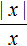
Как и прежде используем правило раскрытия модуля:
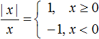
Но это решение не будет правильным, поскольку в первом случае написано условие x ≥ 0, которое допускает что при x = 0 знаменатель выражения обращается в ноль, а на ноль делить нельзя.
В данном примере удобнее использовать подробную запись правила раскрытия модуля, где отдельно рассматривается случай при котором x = 0
Перепишем решение так:
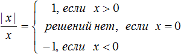
В первом случае написано условие x > 0. Тогда выражение станет равно 1. Например, если x = 3, то числитель и знаменатель станут равны 3, откуда полýчится 1
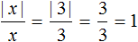
И так будет при любом x, бóльшем нуля.
Во втором случае написано условие x = 0. Тогда решений не будет, потому что на ноль делить нельзя.
В третьем случае написано условие x < 0. Тогда выражение станет равно −1. Например, если x = −4, то числитель станет равен 4, а знаменатель −4, откуда полýчится единица −1
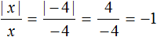
Пример 4. Раскрыть модуль в выражении
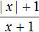
Если x ≥ 0, то модуль, содержащийся в числителе, раскроется со знаком плюс, и тогда исходное выражение примет вид
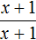
, которое при любом x, бóльшем нуля, будет равно единице: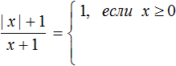
Если x < 0, то модуль раскроется со знаком минус, и тогда исходное выражение примет вид
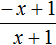
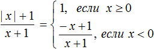
Но надо учитывать, что при x = − 1 знаменатель выражения обращается в ноль. Поэтому второе условие x < 0 следует дополнить записью о том, какие значения может принимать x
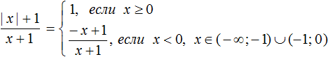
Преобразование выражений с модулями
Модуль, входящий в выражение, можно рассматривать как полноценный множитель. Его можно сокращать и выносить за скобки. Если модуль входит в многочлен, то его можно сложить с подобным ему модулем.
Как и у обычного буквенного множителя, у модуля есть свой коэффициент. Например, коэффициентом модуля |x| является 1, а коэффициентом модуля −|x| является −1. Коэффициентом модуля 3|x+1| является 3, а коэффициентом модуля −3|x+1| является −3.
Пример 1. Упростить выражение |x| + 2|x| − 2x + 5y и раскрыть модуль в получившемся выражении.
Решение
Выражения|x| и 2|x| являются подобными членами. Слóжим их. Остальное оставим без изменений:
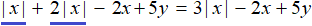
Раскроем модуль в получившемся выражении. Если x ≥ 0, то получим 3x − 2x + 5y, откуда x + 5y.
Если x < 0, то получим −3x − 2x + 5y, откуда −5x + 5y. Вынесем за скобки множитель −5, получим −5(x − y)
В итоге имеем следующее решение:
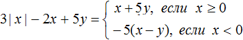
Пример 2. Раскрыть модуль в выражении: −|x|
Решение
В данном случае перед знаком модуля стоит минус. Его можно понимать как минус единицу перед знаком модуля. Если x ≥ 0, то модуль раскроется со знаком плюс, и тогда исходное выражение примет вид −x
Если x < 0, то модуль раскроется со знаком минус, и тогда исходное выражение примет вид −(−x) откуда получим просто x
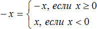
Задания для самостоятельного решения
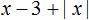
Показать решение
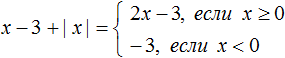
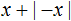
Показать решение
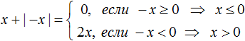
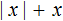
Показать решение
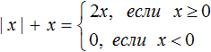
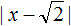
Показать решение
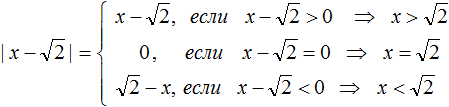
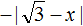
Показать решение
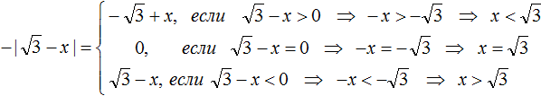